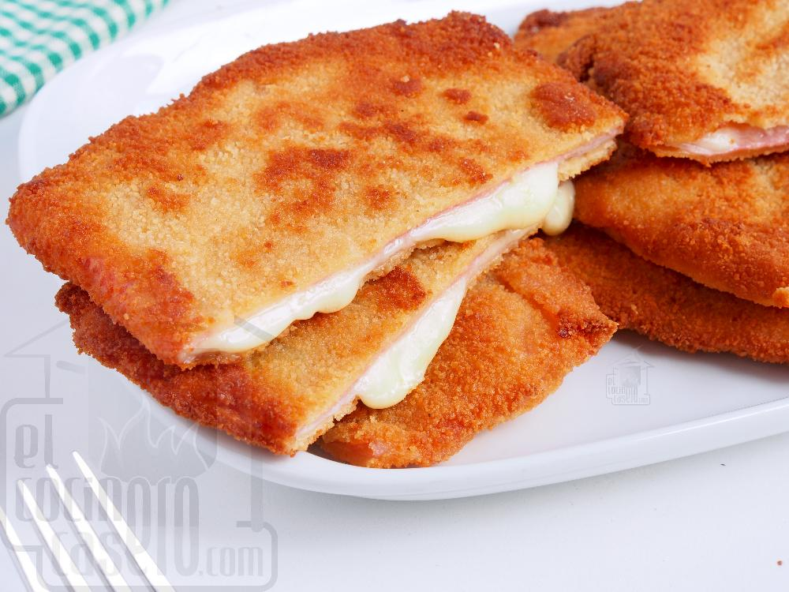

Sanjacobos

Contenido nutricional de un sanjacobo :
Calorías
Grasas
Proteínas
Carbohidratos
Aproximadamente 179 kcal por 100g.
Entre 3.5 y 9.2 g.
Entre 5.7 y 8.6 g.
Alrededor de 21.2 a 29 g.
Ingredientes :
Jamón
Queso
Huevo batido
Pan rallado
Aceite de oliva